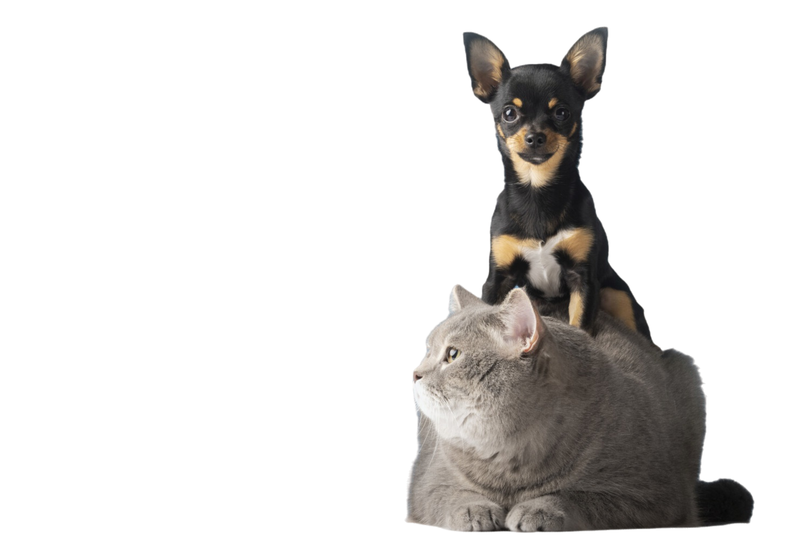

Bem vindo ao Patinhas do Bem
O site onde você pode adotar ou doar animais com facilidade.Transforme vidas com um simples gesto!
Acessar

O site onde você pode adotar ou doar animais com facilidade.Transforme vidas com um simples gesto!
Acessar
Cada um dos nossos cães tem uma história única de resiliência e amor, esperando por uma nova chance de ser feliz.Conheça nossos heróis!

Nossos peludos estão prontos para dar e receber muito carinho. Venha conhecê-los e descubra seu novo melhor amigo!
Nossos animais foram regatados em situações difíceis e agora aguardam por um lar que os acolham com o carinho que merecem.Venha conhecê-los!
Entre e descubra os rostinhos que vão encher sua vida de alegria. Nossos pets estão prontos para dar amor incondicional a quem lhes oferecer um lar.

Ao se envolver com a Patinhas do Bem, você ajuda a mudar o destino de animais abandonados, oferecendo a eles uma nova chance de encontrar um lar amoroso.

Cada contribuição, seja como voluntário ou apoiador, ajuda a ampliar nosso impacto, resgatando mais animais e proporcionando cuidados essenciais.

Participe de uma iniciativa que incentiva a adoção consciente, promovendo a conscientização sobre a importância de oferecer um lar seguro e feliz para nossos pets.

Ana Mendes | Fundadora
A Patinhas do Bem, fundada em 2019 resgata e promove a adoção de animais abandonado na zona norte do Rio de Janeiro. Com dedicação e amor, a ONG transforma vidas, conectando-os a lares cheios de carinho e responsabilidade.
Rio de Janeiro

Renato Silva | Gerente do ponto de doação de São Paulo
Os pontos de doações foram essenciais para o desenvolvimento da ONG, com o envio de rações, medicamentos, casinhas, roupas e brinquedos vindo de diversas regiões, isto nos mostra que conseguimos conectar todos os estados, futuramente buscamos expandir para pelo menos um ponto em cada estado.
São Paulo
Carolina Ferreira | Secretária do ponto de doação de Minas Gerais
Aqui aparecem pessoas doando também de outras regiões, que estejam aqui por passeio e veêm a nossa história através da internet, ficamos imensamente agradecidos e pode ter certeza que os animais farão bom uso de todos os objetos.
Minas Gerais